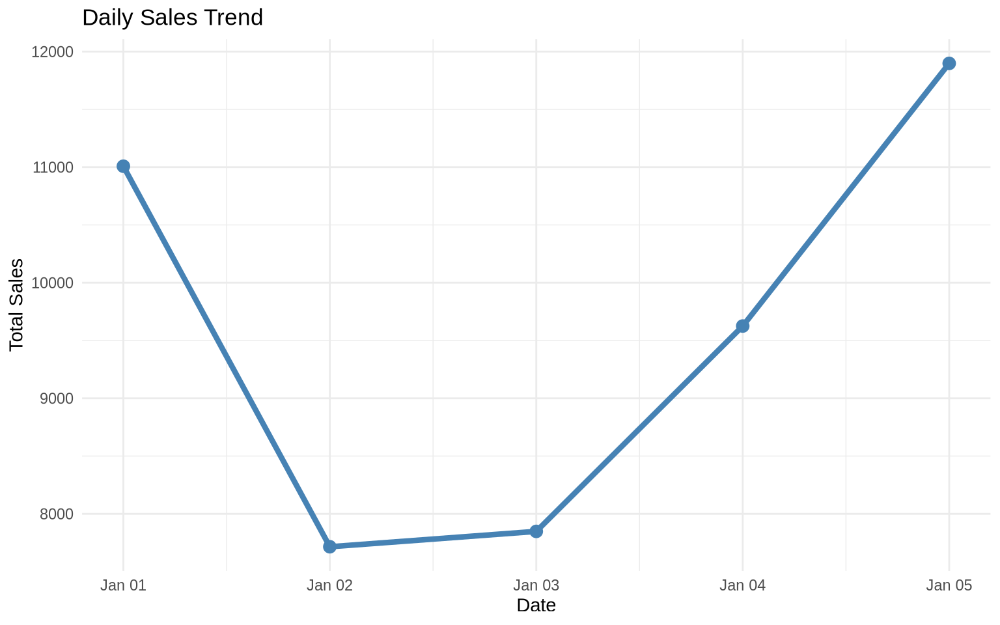
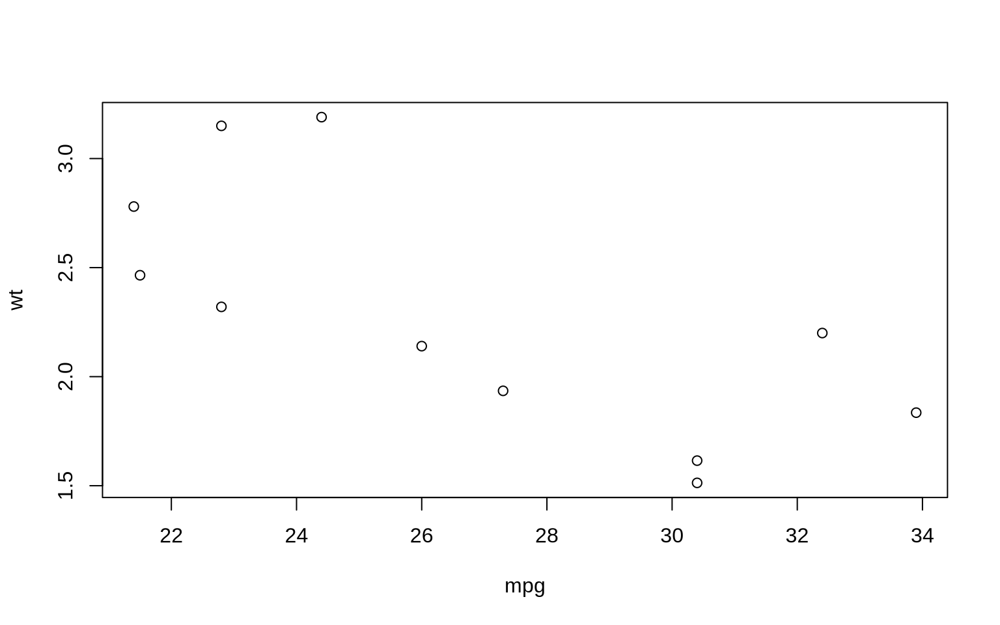

library(tidyverse)The Pipe Operator: Making R Code Readable
Introduction to the Pipe
The pipe operator is one of the most transformative features in modern R programming. It allows you to chain operations together, creating readable, left-to-right workflows that mirror how we think about data transformations.
Two Pipes: %>% and |>
R now has two pipe operators:
%>%- The magrittr pipe (comes with tidyverse)|>- The native pipe (built into R 4.1+)
Both accomplish the same goal: passing the result of one function as the first argument to the next function.
How the Pipe Works
The Basic Concept
The pipe takes the output from the left side and passes it as the first argument to the function on the right side.
# Without pipe - nested functions (hard to read)
result1 <- round(sqrt(sum(c(1, 4, 9, 16, 25))), 2)
# With pipe - sequential operations (easy to read)
result2 <- c(1, 4, 9, 16, 25) %>%
sum() %>%
sqrt() %>%
round(2)
# Both give the same result
print(result1)[1] 7.42print(result2)[1] 7.42Reading Pipe Chains
Read the pipe as “then”: - Take this data - then do this - then do that - then do another thing
Why Use the Pipe?
1. Improved Readability
Compare these three approaches to the same problem:
# Create sample data
numbers <- c(1, 2, 3, 4, 5, 6, 7, 8, 9, 10)
# Approach 1: Nested functions (hard to read)
nested_result <- mean(sqrt(abs(numbers[numbers > 3])))
# Approach 2: Intermediate variables (verbose)
filtered <- numbers[numbers > 3]
absolute <- abs(filtered)
square_root <- sqrt(absolute)
intermediate_result <- mean(square_root)
# Approach 3: Pipe (clear and concise)
pipe_result <- numbers %>%
.[. > 3] %>%
abs() %>%
sqrt() %>%
mean()
# All give the same result
print(c(nested_result, intermediate_result, pipe_result))[1] 2.617431 2.617431 2.6174312. Natural Workflow
The pipe mirrors how we think about data analysis:
# Create a dataset
students <- tibble(
name = c("Alice", "Bob", "Charlie", "Diana", "Eve"),
math = c(85, 92, 78, 95, 88),
science = c(90, 88, 82, 92, 85),
english = c(88, 85, 90, 87, 92)
)
# Natural thought process:
# "Take the students data,
# calculate the average score,
# filter for high performers,
# arrange by average score"
result <- students %>%
mutate(avg_score = (math + science + english) / 3) %>%
filter(avg_score >= 85) %>%
arrange(desc(avg_score))
print(result)# A tibble: 4 × 5
name math science english avg_score
<chr> <dbl> <dbl> <dbl> <dbl>
1 Diana 95 92 87 91.3
2 Bob 92 88 85 88.3
3 Eve 88 85 92 88.3
4 Alice 85 90 88 87.7Pipe with Data Manipulation
Using Pipes with dplyr
The pipe works beautifully with dplyr verbs:
# Create sample sales data
sales <- tibble(
date = rep(seq.Date(from = as.Date("2024-01-01"),
to = as.Date("2024-01-05"),
by = "day"), each = 3),
store = rep(c("North", "South", "East"), 5),
sales = round(runif(15, 1000, 5000)),
returns = round(runif(15, 0, 200))
)
# Complex data pipeline
summary <- sales %>%
mutate(net_sales = sales - returns) %>%
group_by(store) %>%
summarize(
total_sales = sum(sales),
total_returns = sum(returns),
net_revenue = sum(net_sales),
avg_daily_sales = mean(sales),
.groups = "drop"
) %>%
mutate(return_rate = total_returns / total_sales * 100) %>%
arrange(desc(net_revenue))
print(summary)# A tibble: 3 × 6
store total_sales total_returns net_revenue avg_daily_sales return_rate
<chr> <dbl> <dbl> <dbl> <dbl> <dbl>
1 South 18882 397 18485 3776. 2.10
2 North 17530 539 16991 3506 3.07
3 East 11682 663 11019 2336. 5.68Piping into Visualization
You can pipe directly into ggplot2:
sales %>%
group_by(date) %>%
summarize(daily_total = sum(sales), .groups = "drop") %>%
ggplot(aes(x = date, y = daily_total)) +
geom_line(color = "steelblue", size = 1.5) +
geom_point(color = "steelblue", size = 3) +
theme_minimal() +
labs(title = "Daily Sales Trend",
x = "Date",
y = "Total Sales")
Advanced Pipe Techniques
1. Using the Placeholder
The dot (.) represents the piped data:
# When you need to use the data in a non-first argument position
numbers <- 1:10
# Using . to specify where the piped data goes
result <- numbers %>%
lm(formula = . ~ seq_along(.), data = data.frame(. = .)) %>%
summary()
# More practical example
mtcars %>%
lm(mpg ~ wt, data = .) %>%
summary() %>%
.$r.squared[1] 0.75283282. Piping with Anonymous Functions
For R 4.1+, you can use the new anonymous function syntax:
# Using anonymous functions in pipes
1:10 %>%
{\(x) x * 2}() %>%
{\(x) x + 10}() %>%
mean()[1] 21# More practical example with data frame
mtcars %>%
{\(df) df[df$mpg > 20, ]}() %>%
nrow()[1] 143. Side Effects with %T>%
The tee pipe (%T>%) passes the left-hand side forward while also performing a side effect:
library(magrittr) # For %T>%
# Create data, plot it, AND continue processing
result <- mtcars %>%
filter(cyl == 4) %T>%
{print(paste("Processing", nrow(.), "cars with 4 cylinders"))} %>%
select(mpg, wt) %T>%
plot() %>%
summarize(
avg_mpg = mean(mpg),
avg_weight = mean(wt)
)[1] "Processing 11 cars with 4 cylinders"
print(result) avg_mpg avg_weight
1 26.66364 2.285727Common Pipe Patterns
Pattern 1: Read, Clean, Transform, Visualize
# Common data analysis workflow
"data.csv" %>%
read_csv() %>%
filter(!is.na(important_column)) %>%
mutate(new_variable = calculation) %>%
group_by(category) %>%
summarize(metric = mean(value)) %>%
ggplot(aes(x = category, y = metric)) +
geom_col()Pattern 2: Multiple Transformations
# Create example data
transactions <- tibble(
customer_id = sample(1:100, 500, replace = TRUE),
amount = round(runif(500, 10, 500), 2),
category = sample(c("Food", "Electronics", "Clothing", "Other"),
500, replace = TRUE),
date = sample(seq.Date(from = as.Date("2024-01-01"),
to = as.Date("2024-03-31"),
by = "day"),
500, replace = TRUE)
)
# Complex transformation pipeline
customer_summary <- transactions %>%
mutate(month = format(date, "%Y-%m")) %>%
group_by(customer_id, month, category) %>%
summarize(
total_spent = sum(amount),
n_transactions = n(),
.groups = "drop"
) %>%
group_by(customer_id) %>%
mutate(
pct_of_customer_total = total_spent / sum(total_spent) * 100
) %>%
filter(pct_of_customer_total > 25) %>%
arrange(customer_id, desc(pct_of_customer_total))
head(customer_summary, 10)# A tibble: 10 × 6
# Groups: customer_id [5]
customer_id month category total_spent n_transactions pct_of_customer_total
<int> <chr> <chr> <dbl> <int> <dbl>
1 1 2024-03 Food 230. 1 40.3
2 1 2024-02 Food 208. 1 36.4
3 2 2024-03 Clothing 464. 1 31.5
4 2 2024-02 Electro… 459. 2 31.1
5 2 2024-03 Food 412. 1 27.9
6 3 2024-01 Electro… 484. 1 48.9
7 3 2024-02 Electro… 303. 1 30.6
8 4 2024-02 Food 465. 1 44.9
9 4 2024-02 Other 439. 1 42.3
10 5 2024-02 Food 470. 1 39.3Pipe Best Practices
1. Keep Chains Reasonable
# Good: Clear, focused pipeline
good_pipeline <- mtcars %>%
filter(cyl %in% c(4, 6)) %>%
group_by(cyl) %>%
summarize(avg_mpg = mean(mpg))
# Consider breaking very long chains
step1 <- mtcars %>%
filter(cyl %in% c(4, 6)) %>%
mutate(efficiency = mpg / wt)
step2 <- step1 %>%
group_by(cyl) %>%
summarize(
avg_mpg = mean(mpg),
avg_efficiency = mean(efficiency)
)
final_result <- step2 %>%
mutate(category = ifelse(avg_mpg > 25, "High", "Medium"))2. Use Meaningful Variable Names
# Bad: Generic names
df <- mtcars %>% filter(mpg > 20)
df2 <- df %>% select(mpg, wt)
result <- df2 %>% summarize(mean(mpg))
# Good: Descriptive names
fuel_efficient_cars <- mtcars %>%
filter(mpg > 20)
mpg_weight_data <- fuel_efficient_cars %>%
select(mpg, wt)
average_mpg <- mpg_weight_data %>%
summarize(mean_mpg = mean(mpg))3. Format for Readability
# Bad: Everything on one line
result <- data %>% filter(x > 5) %>% mutate(y = x * 2) %>% group_by(category) %>% summarize(mean = mean(y))
# Good: One verb per line, aligned
result <- data %>%
filter(x > 5) %>%
mutate(y = x * 2) %>%
group_by(category) %>%
summarize(mean = mean(y))
# Good: With comments for complex operations
result <- data %>%
# Remove outliers
filter(x > 5 & x < 100) %>%
# Create derived variable
mutate(y = x * 2) %>%
# Calculate summaries by group
group_by(category) %>%
summarize(mean = mean(y))Common Pitfalls and Solutions
Pitfall 1: Forgetting Grouping
# Problem: Forgetting that data is still grouped
problem <- mtcars %>%
group_by(cyl) %>%
filter(mpg > mean(mpg)) # This filters within groups!
# Solution: Explicitly ungroup when needed
solution <- mtcars %>%
group_by(cyl) %>%
filter(mpg > mean(mpg)) %>%
ungroup() # Now subsequent operations work on all dataPitfall 2: Order of Operations
# This will error - can't use a column before creating it
# mtcars %>%
# filter(efficiency > 5) %>%
# mutate(efficiency = mpg / wt)
# Correct order
mtcars %>%
mutate(efficiency = mpg / wt) %>%
filter(efficiency > 5) %>%
head(3) mpg cyl disp hp drat wt qsec vs am gear carb efficiency
Mazda RX4 21.0 6 160 110 3.90 2.620 16.46 0 1 4 4 8.015267
Mazda RX4 Wag 21.0 6 160 110 3.90 2.875 17.02 0 1 4 4 7.304348
Datsun 710 22.8 4 108 93 3.85 2.320 18.61 1 1 4 1 9.827586Exercises
Exercise 1: Basic Piping
Convert this nested function call to a pipe chain:
round(mean(sqrt(abs(c(-4, -9, -16, -25)))), 2)Exercise 2: Data Pipeline
Using the built-in iris dataset: 1. Filter for flowers with Sepal.Length > 5 2. Calculate the ratio of Petal.Length to Petal.Width 3. Group by Species 4. Find the mean ratio for each species 5. Arrange in descending order
Exercise 3: Complex Pipeline
Create a pipeline that: 1. Generates 100 random numbers from a normal distribution 2. Keeps only positive values 3. Squares them 4. Takes the top 10 values 5. Calculates their mean
Summary
The pipe operator fundamentally changes how we write R code:
- Readability: Code reads left-to-right, top-to-bottom
- Debugging: Easy to run partial pipelines to check intermediate results
- Modularity: Each step does one thing
- Maintainability: Easy to add, remove, or modify steps
As you continue with the tidyverse, the pipe will become second nature. It’s not just a convenience—it’s a different way of thinking about data transformation that makes your code more expressive and your intentions clearer.
Next, we’ll explore tibbles, the tidyverse’s modern take on data frames!